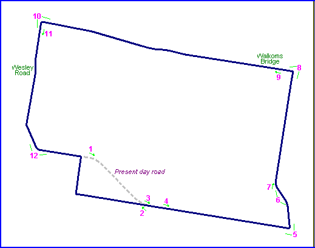

Parksbourne TT circuit, Goulburn, Australia
| Type: | Street Circuit | |
| Length: | 6.650 Miles // 10.700 km | |
| Used: | 1929-1930 | |
| Photos Taken: | 29th October, 2004 |
Motorcycle races were held on this circuit, located to the east of Goulburn, in 1929 and 1930. During the 1930 event, the Goulburn Police confiscated a keg of beer on the grounds that it was not on licensed premises. Naturally, this proved to be somewhat unpopular with the bikers, and the following year the race was moved to Bathurst on the Vale circuit.
|| Contents || Photo's 1-6 | Photo's 7-12 || Home ||

Numbers on the map represent the location where the photographs were taken. Scroll
down to view the photographs.
Return to racingcircuits.net's Photo Archive Main Index
Photographs kindly supplied by Neil Fackerell. Additional information provided by Wayne Adams & Mark Taylor.